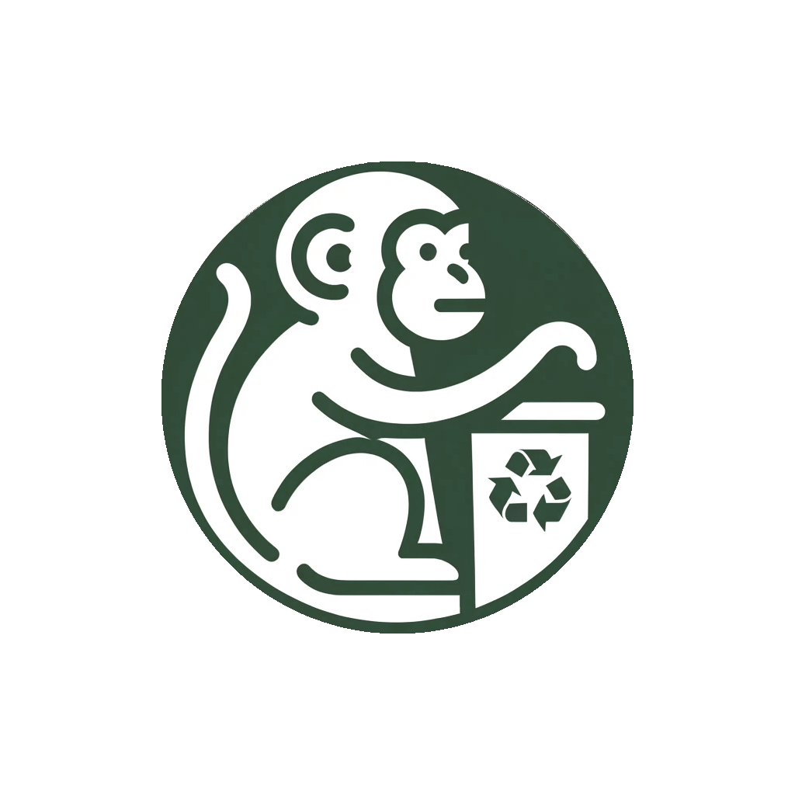

About the Project
Between December 2023 and January 2024, we took part in the NTU School of Computer Science and Engineering (SCSE)'s Computing Challenge, and we were tasked to leverage AI or Machine Learning to address a pressing issue in Singapore.
After extensive discussion, we chose to tackle improper recycling habits in Singapore.

Introducing EcoMonkey: our initiative to combat recycling contamination, one bin at a time.
Our project offered a crucial advantage; being cost-effective, as only the lids would have to be produced. This reduces the cost of production by a huge margin, thus being a more feasible solution compared to other existing ones in Singapore.
Project Details

To use the bin, an image of the item is taken, and the bin would open the suitable category for the user to throw their recyclable. If the object is not a recyclable, the bin would not open any categories.

I developed a prototype Android app as a demo. It enables users to capture a photo of their recyclables, which is then transmitted to my computer using email as a provisional solution.